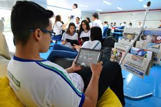

Why use tables in the institution?
It is undeniable that the current generation of students was born connected and the use of tablets in education comes from birth. The use of technology in the classroom becomes, therefore, a necessity for schools that do not want to be left behind. We are not talking about meeting a temporary demand, but about adopting an innovation that is here to stay and that can greatly improve the dynamics of teaching and learning, after all the use of the tablet in school education is no longer a trend but a reality. If, at first, computers were the first facilitators, now it is the turn of tablets in schools. Purchased in large numbers by the Ministry of Education (MEC) for use in public schools and a confirmed trend in the private school system, these devices offer numerous advantages.
How tablets can help in technical education
the use of tablets on mobile phones is through which it is possible to use technical students access to teaching use a useful and useful computer for students of the technical course. Built-in tools of most tools designed as represented by tools designed for tool development tools designed to be used in built-in tools for tool development.

Advantages of teaching with tablets
The multifunctionality of tablets provides and encourages different ways of learning to use
technology in teaching. Due to their ability to translate curriculum content into different formats,
they are tools capable of helping teachers to deal with the diversity that exists among students.
Imagine the same content available in audio, videos and even for reading. This is exactly what the
use of the tablet in school education provides learning in a didactic and pedagogical way. It helps
the teacher to face and deal with the particularities of content assimilation of each student.
Technology in the classroom is an opportunity to closely monitor each student, from kindergarten to
high school.
Another benefit is that, compared to the amount spent on the purchase of traditional school
supplies, the acquisition of these devices for use in the classroom and an internet package can be
much more advantageous.
In addition, the use of the tablet in school education can also be a differential in terms of
mobility and even in the health of students, as it reduces or even eliminates the problem of weight
in backpacks.
Did you like the article? Did you realize the importance of using the tablet in school education?
Students who did online adverts
Wilker Sebastian Afosno Pereira

Cauã Rafael da Costa Souza
Eduardo Trefzger Sant'Anna